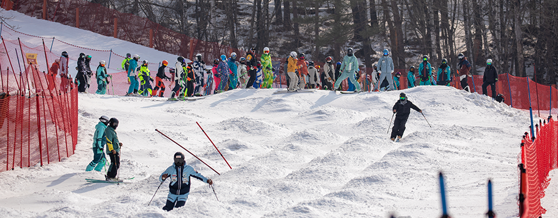

안전 & 매너
스키 입문자와 초보자를 위한 필수 가이드!
스키장 안전수칙
충분한 준비 운동
스키를 타기 전 스트레칭은 필수입니다. 근육을 이완시켜 부상을 예방하세요.
실력에 맞는 슬로프 선택
자신의 실력을 과신하지 마세요. 실력에 맞는 경사도의 슬로프부터 시작하세요.
보호 장비 착용
헬멧, 고글 착용은 안전을 위한 가장 중요한 장비입니다. 반드시 착용하세요.
슬로프 매너 & 대처법

리프트 탑승 요령
안전하게 타고 내리는 방법과 위에서 지켜야 할 탑승 매너를 확인하세요. 장비가 걸리지 않도록 주의!

슬로프에서의 매너
다른 스키어와의 충돌 방지 요령, 추월 방법 등 슬로프 위 규칙을 숙지하여 모두 안전하게 즐기세요.

넘어졌을 때 대처법
넘어졌을 때 올바른 대처법을 익히고, 즉시 슬로프 가장자리로 이동하여 2차 사고를 예방하세요.
초보자의 흔한 실수와 예방법
시선 처리 미숙
스키는 시선이 가는 방향으로 움직이는 경향이 있습니다. 앞만 보고 바닥만 바라보다 넘어지는 실수입니다. 항상 진행 방향으로 시선을 멀리 두어 균형을 잡고 위험을 미리 파악해야 합니다.
과속 및 제어 불능
자신의 실력보다 빠른 속도를 내는 것은 매우 위험합니다. 항상 속도를 제어할 수 있는 범위 내에서 타세요. 플루크 자세로 속도 제어 연습이 중요합니다.
장비 점검 소홀
스키 타기 전에는 항상 장비 상태를 확인하고, 문제가 있다면 전문가에게 점검을 요청하세요. 바인딩 세팅도 중요합니다.
더 많은 정보가 필요하신가요?
SNOW RUSH에서 제공하는 다양한 스키 팁과 장비 정보를 확인해보세요!